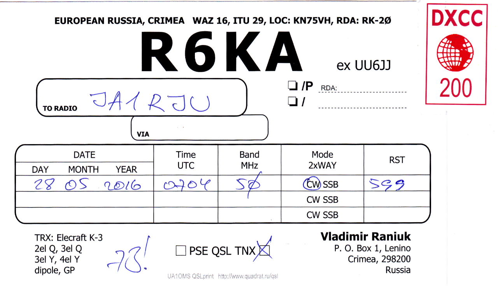
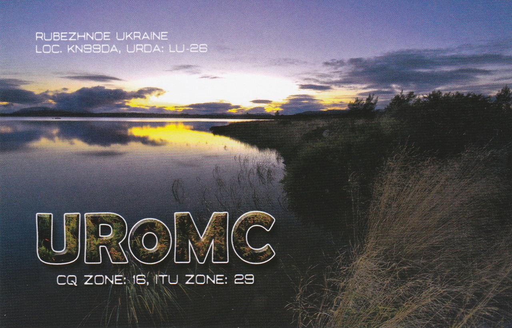

Flash ! DX


|
|
|
|
|
|
|
[Back Issues Aug.2016] TIME:UTC(JST-09:00) Report from JA1RJU(PM95sq) 31.Aug.2016(15:00b) Report from JA1RJU(PM95sq) 30.Aug.2016(15:00b)
|
◎日本近海で発生し南下を続けて迷走していた台風10号は、超大型台風に成長後Uターンして北上、関東、東北地方上陸のコースを取っていたが、
30日の夕方には福島、宮城、岩手の広範囲に大雨の被害を与えながら、宮城県沖合いに接近している。 暴風のエリアは広く、未だに中心部では最大瞬間風速40-50mを保っている。台風はスピード上げて夕方に岩手県大船渡市付近に上陸。今夜には岩手県を通過して青森県から日本海へ抜けるコースが予想されている。 1951年の観測以来、台風が太平洋側から東北地方を直撃するのは”初ルート”となる。 |
Report from JA1RJU(PM95sq) 29.Aug.2016(15:00c)
|
◎JF2MBF/JA2FJPのグループによる南太平洋のVP6J（Pitcairn.I)から運用を始めた。 この時期は6mのJA-VP6の伝搬は厳しいが、50.095MHzでBeaconを発射している。 HF/6mのRIGはIC-7300 & IC-706MK2+500AMPでの運用（6mのアンテナはシングル・ループ）。VP6Jの運用は9/3日まで。 ▼今後の予定▼ ●E51Q（South CooK)=(9/8-9/19) ●E6(Niue=TBA)=(9/20-9/29) ●T2J(Tubalu)=(10/04-10/10) ●3D2GG(Fiji)=(10/10-10/13) |
Report from JA1RJU(PM95sq) 28.Aug.2016(15:00c)
|
◎日本列島の太平洋近海で発生した台風9号、10号、11号の3個の台風は9号、11号は発生直後に関東、東北地方をかすめて北上、北海道に大雨の被害を与え、オホーツク海へ抜けたが、一方で発生直後から南下を続けて迷走していた台風10号は、南大東島付近で勢力を蓄えて超大型台風に成長後、Uターンして北上を始めた。 28日現在伊豆諸島の八丈島の南海上まで接近、現在本土上陸のコースを取っている。予想では太平洋高気圧の辺りを通ってこのまま北上し、関東北部から東北地方への直撃の構え。台風9号は「ハムフェア」終了後の22日の昼過ぎに、関東地方を直撃し被害を与えたが、今回のUターン台風10号は、太平洋上で大型の台風に成長して勢力を保った状態での上陸だけに、今後の動向が心配されている。大荒れの天気になる30日から31日に掛けて”要注意”。 |
Report from JA1RJU(PM95sq) 27.Aug.2016(15:00b) Report from JA1RJU(PM95sq) 26.Aug.2016(15:00b) Report from JA1RJU(PM95sq) 25.Aug.2016(15:00b) Report from JA1RJU(PM95sq) 24.Aug.2016(15:00b) Report from JA1RJU(PM95sq) 23.Aug.2016(15:00b) Report from JA1RJU(PM95sq) 22.Aug.2016(15:00b)
|
◎日本列島の太平洋近海で発生した台風9号が22日の昼頃に関東地方を直撃した。
関東に直接上陸した台風は2005年以来11年ぶりとなるが、台風9号は今夜には北関東から福島県に抜ける模様。
関東各地には豪雨と強風による被害が出ている。台風9号と同時に発生した、台風10号は現在四国沖の太平洋上に停滞していて、今後の動きも心配されている。
先週末に東京・有明で開催されていた「ハムフェア-2016」は台風の影響も無く無事に終了した。

 UB7Kと同時期に入感していたクリミア(EU-RUSSIA)のR6KAのQSL このQSLの受領で50MHz帯の"DXCC＝200"をコンファーム (QSL＝De JA1RJU) |
Report from JA1RJU(PM95sq)
21.Aug.2016(15:00b)
HAM FAIR 2016 (Ariake Tokyo)
Report from JA1RJU(PM95sq)
20.Aug.2016(15:00b)
HAM FAIR 2016 (Ariake Tokyo)
Report from JA1RJU(PM95sq)
19.Aug.2016(15:00b)
Report from JA1RJU(PM95sq)
18.Aug.2016(15:00b)
Report from JA1RJU(PM95sq)
17.Aug.2016(15:00b)
|
◎関東直撃が心配された台風7号は、17日未明に房総半島の東海上をかすめて北上、夕方には北海道に上陸した。
東京西部地域（PM95）では、深夜から明け方に掛けて激しい雨に見舞われたが、心配された強風による被害はなかった。
午前中には”台風一過”となった関東地方の各地では35度を超える猛暑となっている。 8月に入ってEsによるDXの入感は、VR2/HL/BVなどの近場の入感はあるものの、西アジアからEU方面への伝搬は激減に落ち込んだ。 6/7月のヨーロッパ方面のDX入感で、SSN(太陽黒点数)の最低期でも、夏場のEsでDXが楽しめる事が”証明”されたのは貴重な経験だった。 ヨーロッパ方面へのこの伝搬は、今年は例年よりも早めに始まったが”西高東低”のコンデションは相変わらずで、入感エリアに大きな地域差が出た。 いよいよ今週末は東京・有明のビッグサイトで「ハムフェア」が開催される。

   2016年の夏に入感していたアクティブ局 |
Report from JA1RJU(PM95sq)
16.Aug.2016(15:00b)
Report from JA1RJU(PM95sq)
15.Aug.2016(15:00c)
HL2ADY 06:09 50.276-0.040 WSJT JT65a CQ -07dB
HL2ADY 06:11 50.276-0.040 WSJT JT65a CQ -20dB
Report from JA1RJU(PM95sq)
14.Aug.2016(15:00c)
BU2BV 23:50 50.276-0.385 WSJT JT65a -10dB QSO with JA4
BU2BV 23:54 50.276-0.388 WSJT JT65a -08dB QSO with JA2
--------------------------------------------------------------
Report from JA1RJU(PM95sq)
13.Aug.2016(15:00c)
VR2USJ 06:46 50.102 CW CQ
VR2USJ 06:52 50.102 SSB CQ (OP & QSL via JF1RCY)
VR2USJ 07:07 50.102 CW @ RST599/599
Report from JA1RJU(PM95sq)
12.Aug.2016(15:00c)
DS3CHK 03:06 50.276-0.603 WSJT JT65a CQ -10dB (PM36)
DS3CHK 03:08 50.276-0.603 WSJT JT65a CQ -10dB
Report from JA1RJU(PM95sq)
11.Aug.2016(15:00c)
HL2ADY 08:42 50.276-0.423 WSJT JT65a CQ -07dB
HL2ADY 09:23 50.276+0.423 WSJT JT65a CQ -08dB
6L0NJ/B 09:35- 50.051 CW Beacon
HL/VK6JJJ 09:51 50.276-0.339 WSJT JT65a -06dB QSO with JA1
Report from JA1RJU(PM95sq)
10.Aug.2016(15:00b)
BG2ATH 08:13 50.276-0.552 WSJT JT65a CQ -21dB
Report from JA1RJU(PM95sq)
09.Aug.2016(15:00b)
Report from JA1RJU(PM95sq)
08.Aug.2016(15:00b)
6L0NJ/B 02:30- 50.051 CW Beacon
Report from JA1RJU(PM95sq)
07.Aug.2016(15:00d)
EX9T 02:39 50.096 CW CQ CQ FB!
EX9T 02:54 50.096 CW CQ again RST599
EX8M 02:56 50.100 CW CQ FB!
EX8M 03:22 50.100 CW CQ
EX9T 03:30 50.096 CW CQ
UN8GC 03:40 50.098 CW CQ
EX9T 04:45 50.096 CW CQ
BH2RO 05:07 50.276-0.140 WSJT JT65a CQ -11dB
BH2RO 05:41 50.276+0.358 WSJT JT65a -08dB QSO with JA9
BH2RO 05:47 50.276-0.649 WSJT JT65a CQ -25dB
BH2RO 06:50 50.276-0.248 WSJT JT65a CQ -06dB
Report from JA1RJU(PM95sq)
06.Aug.2016(15:00b)
Report from JA1RJU(PM95sq)
05.Aug.2016(15:00c)
6L0NJ/B 02:30- 50.051 CW Beacon
Report from JA1RJU(PM95sq)
04.Aug.2016(15:00b)
Report from JA1RJU(PM95sq)
03.Aug.2016(15:00c)
(KL7HBK 22:58 50.276 WSJT JT65a into JA7)
-----------------------------------------------------------------
DS3CHK 02:55 50.276-0.663 WSJT JT65a -08dB QSO with JA3
6L0NJ/B 03:00- 50.051 CW Beacon
BD4SG 03:19 50.276-0.024 WSJT JT65a CQ -09dB
DS3CHK 03:42 50.276-0.420 WSJT JT65a CQ -11dB
BD4SG 03:51 50.276-0.503 WSJT JT65a CQ -20dB
Report from JA1RJU(PM95sq)
02.Aug.2016(15:00c)
6L0NJ/B 09:50- 50.051 CW Beacon RST599 (Es=JA6)
Report from JA1RJU(PM95sq)
01.Aug.2016(15:00c)
(AB4B 00:46 50.086 CW into JA7)
(NW0W 00:43 50.083 CW into JA7)
BH4TYL 01:45 50.276-0.046 WSJT JT65a CQ -11dB
BH4TYL 01:49 50.276-0.046 WSJT JT65a CQ -10dB
 R6KAと共にRuropean RussiaからアクティブなUB7K
R6KAと共にRuropean RussiaからアクティブなUB7K